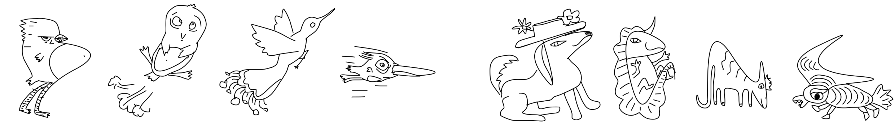
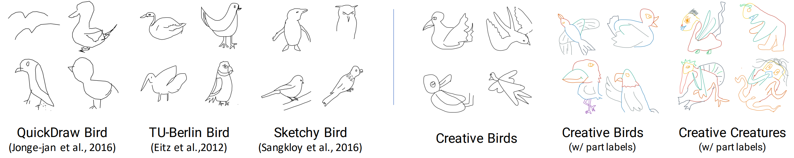
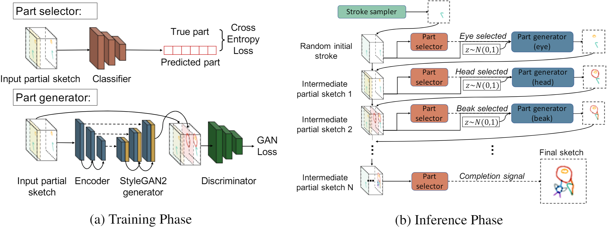
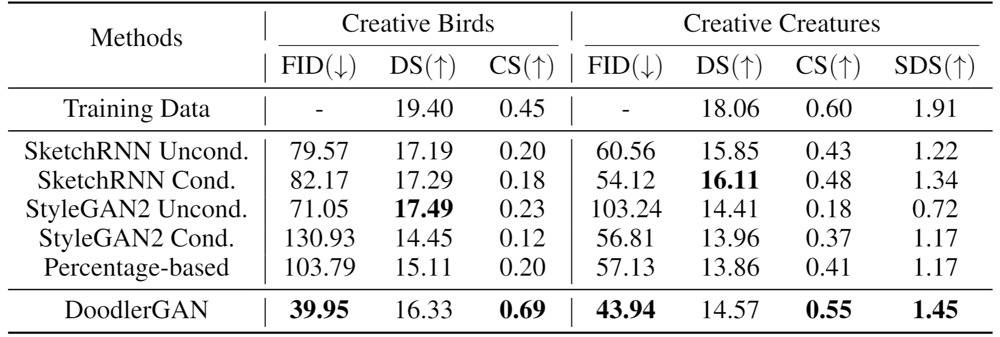
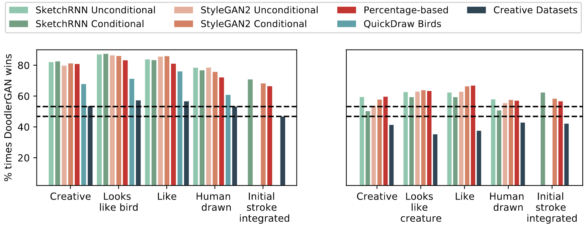
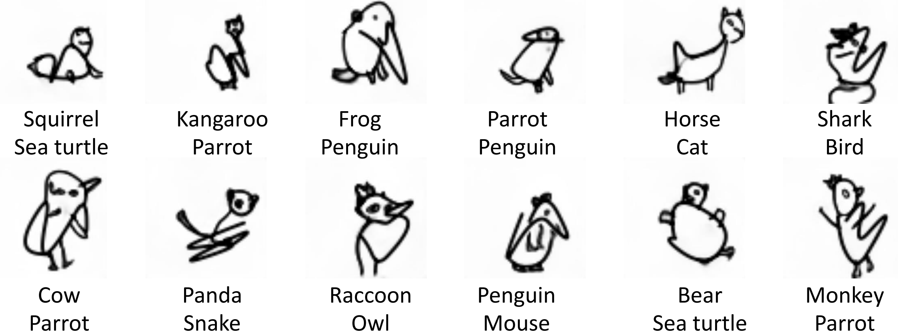

Sketching or doodling is a popular creative activity that people engage in. However, most existing work in automatic sketch understanding or generation has focused on sketches that are quite mundane. In this work, we introduce two datasets of creative sketches -- Creative Birds and Creative Creatures -- containing 10k sketches each along with part annotations. We propose DoodlerGAN -- a part-based Generative Adversarial Network (GAN) -- to generate unseen compositions of novel part appearances. Quantitative evaluations as well as human studies demonstrate that sketches generated by our approach are more creative and of higher quality than existing approaches. In fact, in Creative Birds, subjects prefer sketches generated by DoodlerGAN over those drawn by humans!

We collect two datasets -- Creative Birds and Creative Creatures -- containing 10k creative sketches of birds and generic creatures respectively, along with semantic part annotations and free-form text captions. See a video of our data collection interface.

We propose DoodlerGAN -- a part-based Generative Adversarial Network that generates novel part appearances and composes them in previously unseen configurations. During training, given an input partial sketch represented as stacked part channels, a part selector is trained to predict the next part to be generated, and a part generator is trained for each part to generate that part. During inference, starting from a random initial stroke, the part selector and part generators work iteratively to complete the sketch. This makes the model well suited for human-in-the-loop interactive interfaces where it can make suggestions based on user drawn partial sketches. See a video of our demo and try it yourself here!
For more details about our model and experiments, please take a look at our full paper.

We quantitatively evaluate our generations with an inception model trained on quickdraw dataset using two metrics, Fréchet inception distances (FID) and Diversity Score (DS), borrowed from the GAN literature. We also propose two intuitive metrics that evaluate the generation quality and diversity. Specifically, the Characteristic Score (CS) measures how often a generated sketch is classified to be a bird or a creature. The Semantic Diversity Score (SDS) measures how diverse the sketches are in terms of the different creature categories they represent. On FID, CS, and SDS, DoodlerGAN outperforms all the strong baselines.

We run human studies on 5 criteria against 5 baselines and 3 datasets. For each of the comparison, we show a pair of sketches from two methods and ask the subject which is better given the criteria. Each bar here shows the percentage of the time that DoodlerGAN beats a competitor. Notice that for Creative Birds, subjects prefer sketches generated by DoodlerGAN over humans!

We run classification with the classifier trained on quickdraw dataset w.r.t. the creature sketches generated by DoodlerGAN, and find that our model often generates hybrids of creatures.